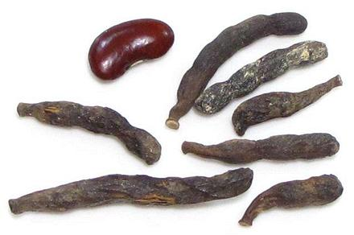

Selim Pepper

[Grains of Selim, Senegal pepper, Kimba pepper, African pepper,
Moor pepper, Negro pepper, Kani pepper, Kili pepper, Ethiopian pepper;
Djar (Wolof, Senegal); Poivre de Sénégal (French);
Kieng (Cameroon); Hwentea (Ga - Ghana); Chimba (North Ghana);
Xylopia aethiopica | Xylopia striata
similar but larger - both of family Annonaceae]
This spice is totally unrelated to the Pepper Family (Piperaceae) or
even the Pepper Order (Piperales). It is used for similar
purposes as those peppers, but is much more aromatic. The tree, growing
to 70 feet tall, is native to much of Sub-Saharan Africa, from Senegal
across to Ethiopia, and as far south as Tanzania, with Ghana the largest
producer of the spice. It is thought to have originated in Ethiopia,
but is particularly important in Senegal on the coast of West Africa.
In Senegal, most dried Selim Pepper is smoked during the drying to
give it a deeper flavor. The bark is used medicinally, and the wood is
valued for many uses.
During Medieval times, this pepper was exported to Europe - until
the king of Portugal outlawed importing any pepper except black pepper,
for which he had a monopoly.
More on Annonas.
A major use in Senegal is crushed and mixed with unroasted coffee
beans for the coffee drink Café Tuba, for which it is essential.
The popularity of this drink has been increasing inside and outside
Senegal. It is also used in meat stews, soups, and ground for use in
rubs for meat and fish.
Buying:
You are highly unlikely to find this in
the spice section of your local supermarket, but it is available
on-line from a few sources. The photo specimens were purchased from
a spice store in San Francisco for 2018 US $6.69 for a 4 ounce jar
(plus shipping).
Cooking:
These are used in two ways, whole and powdered.
To use whole, lightly crush them. Remove them at serving time. Powdered,
split them open and remove the seeds, which can be quite bitter, then
toast them lightly and grind to powder in your spice grinder.
Subst:
The standard recommendation is 1/2 Cubeb Pepper
and 1/2 grated Nutmeg. If you don't have Cubeb Pepper, then regular
Black Pepper. From the smell, I suspect Cinnamon might be even
closer than Nutmeg.
ca_selimz 180323 - www.clovegarden.com
©Andrew Grygus - agryg@clovegarden.com - Photos
on this page not otherwise credited © cg1
- Linking to and non-commercial use of this page permitted